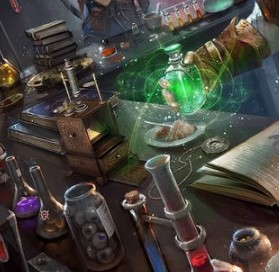

Tier 1: Baseline of Buisness
There are few times when good ol' recycling isnt a solution to a problem.
Combining knowledge, skill and ingenuity, Kalista scavenges materials to replicate and perfect research and craft of others.
With her arsenal of gadgets, Kalista is ready for nearly any situation.
In a world where rescources are scarce, inventiveness is irreplaceable.
 Fast learner, faster adjuster, big earner
Kalisto’s gift of quick wit and a quicker grasp of concepts grants her an ability to understand and implement most research in creative ways. All around the world she can research techniques (usually by getting a hold onto a piece of pristine craftsmanship to reverse engineer, or by acquiring research document pertaining to the field, and those that are useful to the craft.) There are two types or techniques – minor and major. Minor teach a small ability with a nonexistent progression paths. Major are built through extensive research, and improve akin to the character systems. To learn a technique, you need to spend at least 2d10 hours researching a minor ability or 4d10 hours researching major abilities (rolling these at the time of acquisition). To craft these , you need to use special materials on top of the regular materials. Major techniques have a predetermined failure rate of crafting. Wasting the material, and failing the craft.
Gun Ho
Your gun is a tinkering marvel, but its far from perfect. For now it can be scoped as a bonus action, to gain 30 bonus range and double the damage of it. After scoping, reloading the chamber takes a longer time, forcing you to reload it as a bonus action until you can use your gun again.
 Materials Scrapped
Materials Scrapped
Every time you come upon scrap, you can scavenge it for useful parts. Roll a 1d12 a number of times chosen by the DM to gain materials to use for the techniques of “Fast learner, Faster adjuster, big earner”. These can be also purchased from merchants, but at an exorbitant price. Some techniques will require special materials not obtainable through scavenging. These would need to be obtained in the world.